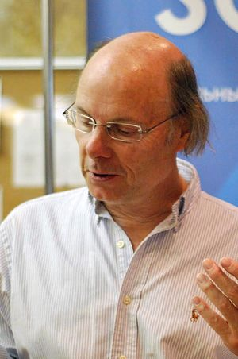

C++ (Сі-плюс-плюс) — мова програмування загального призначення з підтримкою кількох парадигм програмування: об'єктно-орієнтованої, узагальненої, процедурної та ін. Б'ярн Страуструп (англ. Bjarne Stroustrup) почав створювати C++ в AT&T Bell Laboratories (Мюррей-Хілл[en], Нью-Джерсі) у 1979 році. На етапі зародження мова мала назву «Сі з класами». Згодом Страуструп перейменував мову на C++ у 1984 р. Бере витоки з мови програмування С. Вперше описана міжнародним стандартом ISO/IEC 14882:1998 (C++98), найбільш актуальним же є стандарт ISO/IEC 14882:2020 (C++20). У 1990-х роках C++ стала однією з найуживаніших мов програмування загального призначення. Мову використовують для системного програмування, розробки прикладного програмного забезпечення, написання драйверів, потужних серверних та клієнтських програм, а також для розробки розважальних програм, наприклад, відеоігор. C++ суттєво вплинула на інші популярні сьогодні мови програмування: C# та Java.
Назва «Сі++» була вигадана Ріком Масситті (Rick Mascitti) і вперше було використана в грудні 1983 року. Раніше, на етапі розробки, нова мова називалася «Сі з класами». Ім'я, що вийшло у результаті, походить від оператора Сі «++» (збільшення значення змінної на одиницю) і поширеному способу присвоєння нових імен комп'ютерним програмам, що полягає в додаванні до імені символу «+» для позначення поліпшень. Згідно зі Страуструпом, «ця назва указує на еволюційну природу змін Ci». Виразом «С+» називали ранішню, не пов'язану з Сі++, мову програмування. Деякі програмісти на Сі можуть відмітити, що якщо виконуються вирази x=3; y=x++; то в результаті вийде x=4 і y=3, тому що x збільшується тільки після присвоєння його у. Проте якщо другий вираз буде y=++x; то вийде x=4 і y=4. Виходячи з цього, можна зробити висновок, що логічніше було б назвати мову не Сі++, а ++Сі. Проте обидва вирази c++ і ++c збільшують с, а крім того вираз c++ поширеніший. Педанти також можуть відмітити, що введення мови Сі++ не змінює самого Сі, тому найточнішим ім'ям було б «С+1».
 Б'ярн народився і виріс в місті Орхусі, Данія. Вступив в Орхуський університет на відділення інформатики. Закінчивши його у 1975 році, він отримав ступінь магістра. Пізніше, у 1979 році, захистив дисертацію доктора філософії з інформатики в Кембриджському університеті, працюючи над конструюванням розподіленої системи в комп'ютерній лабораторії Кембриджського університету. Член коледжу Черчилля. У 1979 році Страуструп разом зі своєю дружиною і дочкою переїхав в Нью-Джерсі, щоб піти працювати в комп'ютерний науково-дослідний центр «Bell Telephone Laboratories». У цьому ж році у нього народився син Ніколас. З дня заснування до закриття в 2002 році, коли відбулося об'єднання з відділенням наукових досліджень Техаського університету A&M, Б'ярн був головою відділу досліджень в області великомасштабного програмування (Large-scale Programming Research department) в компанії AT&T Bell Labs.